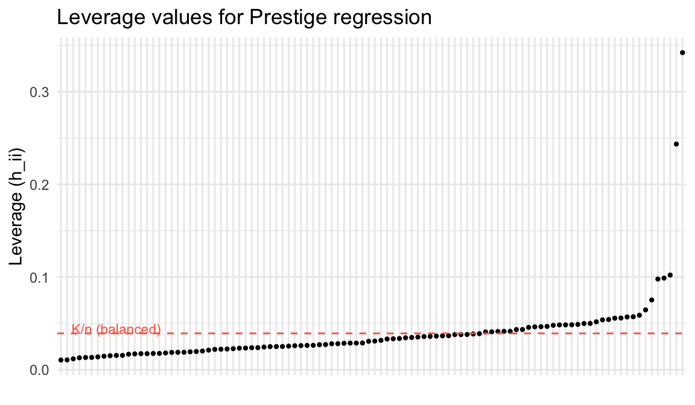

library(ggplot2)
library(carData)
options(digits = 3)
tr <- function(M) sum(diag(M))
data(Prestige)4. Sensitivity and Leverage
Frisch-Waugh-Lovell, partial R², and influential observations
In applied work we rarely care about every regressor equally. We have a treatment or variable of interest (\(X_1\)) and controls we include to avoid omitted variable bias (\(X_2\)). Partitioning \(X = [X_1 \; X_2]\) lets us answer three questions: What is the formula for \(\hat\beta_1\) holding \(X_2\) constant? What happens if we omit \(X_2\)? And how sensitive is \(\hat\beta_1\) to confounders we cannot observe?
Questions this chapter answers:
- How does the Frisch-Waugh-Lovell theorem decompose a multivariate regression into residual-on-residual regressions?
- Which observations exert the most influence on OLS estimates, and how does leverage measure this?
- How do sensitivity analysis tools (Cinelli-Hazlett) quantify robustness to unobserved confounders?
1 The Frisch-Waugh-Lovell theorem
The FWL theorem says: the coefficient \(\hat\beta_2\) from the full regression \(y = X_1\beta_1 + X_2\beta_2 + e\) is identical to the coefficient from regressing the residualized outcome on the residualized treatment — after partialling out \(X_1\) from both.
In matrix terms, let \(M_1 = I - X_1(X_1'X_1)^{-1}X_1'\) be the annihilator for \(X_1\). Then:
\[\hat\beta_2 = (X_2'M_1 X_2)^{-1} X_2' M_1 y \tag{1}\]
This is just OLS on the residuals \(M_1 y\) and \(M_1 X_2\) — the parts of \(y\) and \(X_2\) that \(X_1\) cannot explain.
Theorem 1 (Frisch-Waugh-Lovell Theorem) The coefficient \(\hat\beta_2\) from the full regression \(y = X_1\beta_1 + X_2\beta_2 + e\) equals the coefficient from regressing \(M_1 y\) on \(M_1 X_2\), where \(M_1 = I - X_1(X_1'X_1)^{-1}X_1'\). That is: partial out the controls from both sides, then run OLS.
NoteFWL as a Bridge Between Chapters
The FWL theorem connects OLS geometry (Chapter 3) to applied causal inference. Partial regression plots — residualized \(Y\) vs. residualized \(X\) — visualize the multivariate coefficient in two dimensions. This same logic underlies fixed effects estimation (Chapter 12): demeaning within groups is FWL with group dummies as controls.
Let’s verify with the Prestige data. We’ll show that the coefficient on education from a regression controlling for income and women is the same as the coefficient from the residual-on-residual regression:
# Full regression
mod_full <- lm(prestige ~ education + income + women, data = Prestige)
# Step 1: Residualize both y and education against (income, women)
e_y <- resid(lm(prestige ~ income + women, data = Prestige))
e_educ <- resid(lm(education ~ income + women, data = Prestige))
# Step 2: Regress residuals on residuals
mod_fwl <- lm(e_y ~ e_educ)
c(full_regression = coef(mod_full)["education"],
FWL = coef(mod_fwl)["e_educ"])full_regression.education FWL.e_educ
4.19 4.19 Identical. FWL tells us that the coefficient on education reflects only the variation in education not explained by income and women.
1.1 FWL with matrices
Let’s do it with the projection and annihilator matrices directly:
y <- Prestige$prestige
n <- nrow(Prestige)
# X1 = controls (intercept, income, women)
X1 <- cbind(1, Prestige$income, Prestige$women)
# X2 = variable of interest (education)
X2 <- Prestige$education
# Build the annihilator for X1
P1 <- X1 %*% solve(crossprod(X1)) %*% t(X1)
M1 <- diag(n) - P1
# FWL formula: beta_2 = (X2'M1 X2)^{-1} X2'M1 y
beta_fwl <- as.numeric(solve(t(X2) %*% M1 %*% X2) %*% t(X2) %*% M1 %*% y)
c(matrix_FWL = beta_fwl, lm = coef(mod_full)["education"]) matrix_FWL lm.education
4.19 4.19 2 Plotting partial effects
One practical benefit of FWL: it lets us visualize relationships from a multivariate regression in two dimensions. After partialling out the controls, we can scatter the residualized \(y\) against the residualized \(x\) and draw the partial regression line.
df_partial <- data.frame(educ_resid = e_educ, prestige_resid = e_y,
job = rownames(Prestige))
ggplot(df_partial, aes(educ_resid, prestige_resid)) +
geom_point(alpha = 0.5) +
geom_smooth(method = "lm", se = FALSE, color = "steelblue", linewidth = 1) +
geom_text(data = df_partial[abs(df_partial$prestige_resid) > 15, ],
aes(label = job), hjust = -0.1, size = 2.5, alpha = 0.7) +
labs(x = "Education residual (net of income, women)",
y = "Prestige residual (net of income, women)",
title = "Partial regression plot: education → prestige",
subtitle = paste0("Slope = ", round(coef(mod_fwl)[2], 2),
" (same as the multivariate coefficient)")) +
theme_minimal()`geom_smooth()` using formula = 'y ~ x'
The slope of this line is the multivariate regression coefficient. Each point shows an occupation’s education and prestige after removing what income and gender composition predict. Ministers have high prestige residuals — more prestige than their income and gender composition would suggest.
3 Leverage: which observations pull the line?
The diagonal elements of the hat matrix \(P = X(X'X)^{-1}X'\) measure leverage — how unusual each observation’s \(X\) values are relative to the rest of the data. The \(i\)-th leverage value is:
\[h_{ii} = X_i'(X'X)^{-1}X_i\]
Definition 1 (Leverage) The leverage of observation \(i\) is \(h_{ii} = X_i'(X'X)^{-1}X_i\), the \(i\)-th diagonal element of the hat matrix \(P\). It measures how unusual the observation’s covariates are: \(K/n \leq h_{ii} \leq 1\), and \(\sum h_{ii} = K\).
X <- cbind(1, Prestige$education, Prestige$income, Prestige$women)
P <- X %*% solve(crossprod(X)) %*% t(X)
K <- ncol(X)
# Leverage = diagonal of P
h <- diag(P)
# hatvalues() gives the same thing
all.equal(h, as.numeric(hatvalues(mod_full)))[1] TRUE# Label with occupation names for later use
names(h) <- rownames(Prestige)
# Properties: leverage is between 0 and 1, sums to K
c(min = min(h), max = max(h), sum = sum(h), K = K) min max sum K
0.0104 0.3422 4.0000 4.0000 A regression is balanced when leverage values are roughly equal at \(K/n\). Observations far from the center of the \(X\) space have high leverage — they pull the regression line toward them:
df_lev <- data.frame(leverage = h, job = rownames(Prestige))
ggplot(df_lev, aes(x = reorder(job, leverage), y = leverage)) +
geom_point(size = 0.8) +
geom_hline(yintercept = K / n, linetype = "dashed", color = "tomato") +
annotate("text", x = 10, y = K / n + 0.005, label = "K/n (balanced)",
color = "tomato", size = 3) +
labs(x = "", y = "Leverage (h_ii)",
title = "Leverage values for Prestige regression") +
theme_minimal() +
theme(axis.text.x = element_blank(), axis.ticks.x = element_blank())
# Which occupations have the highest leverage?
head(sort(h, decreasing = TRUE), 5) general.managers physicians ministers
0.3422 0.2435 0.1021
lawyers sewing.mach.operators
0.0988 0.0978 4 Leave-one-out regression
If we refit the model dropping observation \(i\), how much does \(\hat\beta\) change? The leave-one-out coefficient is:
\[\hat\beta_{(-i)} = \hat\beta - (X'X)^{-1}X_i \tilde{e}_i\]
where \(\tilde{e}_i = \hat{e}_i / (1 - h_{ii})\) is the leave-one-out residual — the ordinary residual inflated by the leverage. High leverage shrinks the ordinary residual (the observation pulls the line toward itself), so dividing by \((1 - h_{ii})\) corrects for this.
Theorem 2 (Leave-One-Out Formula) The leave-one-out coefficient change is \(\hat\beta_{(-i)} = \hat\beta - (X'X)^{-1}X_i \tilde{e}_i\), where \(\tilde{e}_i = \hat{e}_i / (1 - h_{ii})\). High leverage shrinks ordinary residuals; dividing by \((1 - h_{ii})\) corrects for this self-influence.
# Ordinary residuals
e_hat <- resid(mod_full)
# Leave-one-out residuals
e_tilde <- e_hat / (1 - h)
# Studentized residuals: leave-one-out residual / its standard error
# rstudent() uses sigma_{(-i)}, the error variance without obs i
rst <- rstudent(mod_full)
# Compare the first few
head(cbind(ordinary = e_hat, leave_one_out = e_tilde, studentized = rst)) ordinary leave_one_out studentized
gov.administrators 4.58 4.71 0.590
general.managers -9.39 -14.28 -1.485
accountants 4.69 4.78 0.601
purchasing.officers 4.22 4.28 0.540
chemists 8.15 8.55 1.065
physicists 4.47 4.73 0.584An observation is influential if it has both high leverage and a large residual. The change in fitted values when observation \(i\) is dropped is:
\[\hat{Y}_i - \tilde{Y}_i = h_{ii} \tilde{e}_i\]
df_infl <- data.frame(leverage = h, rstudent = rst, job = rownames(Prestige))
df_infl$flag <- abs(rst) > 2 | h > 3 * K / n
ggplot(df_infl, aes(leverage, rstudent)) +
geom_point(aes(color = flag), size = 1.5) +
geom_text(data = df_infl[df_infl$flag, ],
aes(label = job), hjust = -0.1, size = 2.5) +
geom_hline(yintercept = c(-2, 2), linetype = "dashed", alpha = 0.4) +
geom_vline(xintercept = 3 * K / n, linetype = "dashed", alpha = 0.4) +
scale_color_manual(values = c("FALSE" = "gray50", "TRUE" = "tomato"),
guide = "none") +
labs(x = "Leverage (h_ii)", y = "Studentized residual",
title = "Influential observations: high leverage AND large residual") +
theme_minimal()
Observations in the upper-right or lower-right are candidates for investigation: they have unusual \(X\) values and don’t fit the model well. This could indicate a data error, a different population, or a genuinely interesting case.
5 Regression weights: which observations matter most?
The FWL result reveals that OLS assigns implicit weights to observations. For a single variable of interest \(z\) in a regression with controls \(X\), the coefficient is:
\[b = \frac{\sum z_i^* y_i}{\sum z_i^{*2}}\]
where \(z_i^* = (Mz)_i\) is the residual from regressing \(z\) on the controls. Observations where \(z_i^{*2}\) is large — where the variable of interest has a lot of variation not explained by controls — receive the most weight.
# Women's share in occupation: variable of interest
# Controls: intercept, education, income
z_star <- as.vector(M1 %*% Prestige$women) # M1 already built above
# Regression weights
omega <- z_star^2
names(omega) <- rownames(Prestige)
# Most and least weighted occupations
cat("Highest weight (most variation in women% net of controls):\n")Highest weight (most variation in women% net of controls):head(sort(omega, decreasing = TRUE), 5) physicians general.managers osteopaths.chiropractors
4.53e-26 2.33e-26 1.67e-26
lawyers farm.workers
1.57e-26 9.39e-27 cat("\nLowest weight (almost no unique variation):\n")
Lowest weight (almost no unique variation):head(sort(omega), 5) construction.foremen receptionsts athletes
3.77e-32 1.97e-31 8.91e-31
commercial.travellers sales.supervisors
1.08e-30 1.77e-30 # Verify: weighted formula gives same coefficient as lm
b_weighted <- sum(z_star * y) / sum(z_star^2)
c(weighted_formula = b_weighted, lm = coef(mod_full)["women"])weighted_formula lm.women
-4.26e+14 -8.91e-03 Occupations like general managers and ministers — where the share of women is very different from what education and income would predict — have thousands of times more influence on the coefficient than occupations where women’s share is well-predicted by the controls.
6 Partial \(R^2\)
The partial \(R^2\) measures how much of the remaining variance in \(Y\) (after accounting for \(X_1\)) is explained by \(X_2\):
\[R^2_{Y \sim X_2 | X_1} = 1 - \frac{\text{RSS}(X_1, X_2)}{\text{RSS}(X_1)} = \frac{\text{RSS}(X_1) - \text{RSS}(X_1, X_2)}{\text{RSS}(X_1)} \tag{2}\]
For a single variable, the partial \(R^2\) equals the squared partial correlation:
# RSS from controls only
mod_controls <- lm(prestige ~ income + women, data = Prestige)
RSS_controls <- sum(resid(mod_controls)^2)
# RSS from full model
RSS_full <- sum(resid(mod_full)^2)
# Partial R^2 of education given (income, women)
partial_r2_educ <- 1 - RSS_full / RSS_controls
# Equivalently: squared correlation of FWL residuals
cor_fwl <- cor(e_y, e_educ)^2
c(partial_R2 = partial_r2_educ, squared_partial_cor = cor_fwl) partial_R2 squared_partial_cor
0.542 0.542 We can also compute partial \(R^2\) for each variable using the matrix formula. The FWL residuals give us everything we need:
# Partial R^2 for each variable
partial_r2 <- function(mod, var_name) {
formula_reduced <- update(formula(mod), paste("~ . -", var_name))
mod_reduced <- lm(formula_reduced, data = Prestige)
1 - sum(resid(mod)^2) / sum(resid(mod_reduced)^2)
}
data.frame(
variable = c("education", "income", "women"),
partial_R2 = sapply(c("education", "income", "women"),
function(v) partial_r2(mod_full, v))
) variable partial_R2
education education 0.542079
income income 0.185784
women women 0.000874Education has a high partial \(R^2\) — it explains a large share of prestige variation that income and women’s share cannot. Women’s share has a very low partial \(R^2\): once we know education and income, knowing the gender composition adds almost nothing.
7 Sensitivity analysis: Cinelli-Hazlett (2020)
Even after including controls, there may be unobserved confounders. The OVB formula from Chapter 2 says the bias from omitting a variable \(Z\) is:
\[\text{bias} = \underbrace{\frac{\text{Cov}(D, Z)}{\text{Var}(D)}}_{\text{imbalance}} \times \underbrace{\frac{\text{Cov}(Z^{\perp D}, Y^{\perp D})}{\text{Var}(Z^{\perp D})}}_{\text{impact}}\]
Cinelli and Hazlett (2020) reparameterize this in terms of partial \(R^2\) values, which are easier to reason about:
\[|\text{bias}| \propto \sqrt{\frac{R^2_{D \sim Z} \cdot R^2_{Y \sim Z|D}}{1 - R^2_{D \sim Z}}}\]
The key insight: a confounder must predict both treatment and outcome to generate meaningful bias. If either partial \(R^2\) is small, the bias is small.
Let’s simulate and run a sensitivity analysis:
set.seed(123)
N <- 1000
beta_D <- 2; beta_Z <- 3
D <- rbinom(N, 1, 0.5)
Z <- rnorm(N)
Y <- beta_D * D + beta_Z * Z + rnorm(N)
# Naive model (omitting Z) -- biased
coef(lm(Y ~ D))(Intercept) D
0.0569 1.9519 # Full model (including Z) -- unbiased
model_full_sim <- lm(Y ~ D + Z)
coef(model_full_sim)(Intercept) D Z
0.0254 1.9417 3.0600 The naive model overestimates the effect of \(D\). The full model recovers \(\beta_D \approx 2\). But what if there were another confounder we couldn’t observe? We use the observed confounder \(Z\) as a benchmark:
# How strong is Z as a confounder?
# Partial R^2 of Z on D
partial_r2_DZ <- cor(D, Z)^2 # for a single variable, partial R^2 ≈ cor^2
# Partial R^2 of Z on Y|D
RSS_D_only <- sum(resid(lm(Y ~ D))^2)
RSS_full_sim <- sum(resid(model_full_sim)^2)
partial_r2_YZ_D <- 1 - RSS_full_sim / RSS_D_only
c(R2_D_Z = partial_r2_DZ, R2_Y_Z_given_D = partial_r2_YZ_D) R2_D_Z R2_Y_Z_given_D
2.78e-06 9.07e-01 An unobserved confounder would need partial \(R^2\) values at least this large with both \(D\) and \(Y\) to generate comparable bias. If the strongest observed predictor explains only a few percent of residual variation, an omitted variable would need to be far stronger to overturn the result.
# The sensemakr package automates this analysis
if (requireNamespace("sensemakr", quietly = TRUE)) {
library(sensemakr)
sens <- sensemakr(model_full_sim, treatment = "D",
benchmark_covariates = "Z")
summary(sens)
}Sensitivity Analysis to Unobserved Confounding
Model Formula: Y ~ D + Z
Null hypothesis: q = 1 and reduce = TRUE
-- This means we are considering biases that reduce the absolute value of the current estimate.
-- The null hypothesis deemed problematic is H0:tau = 0
Unadjusted Estimates of 'D':
Coef. estimate: 1.94
Standard Error: 0.062
t-value (H0:tau = 0): 31.2
Sensitivity Statistics:
Partial R2 of treatment with outcome: 0.494
Robustness Value, q = 1: 0.614
Robustness Value, q = 1, alpha = 0.05: 0.592
Verbal interpretation of sensitivity statistics:
-- Partial R2 of the treatment with the outcome: an extreme confounder (orthogonal to the covariates) that explains 100% of the residual variance of the outcome, would need to explain at least 49.4% of the residual variance of the treatment to fully account for the observed estimated effect.
-- Robustness Value, q = 1: unobserved confounders (orthogonal to the covariates) that explain more than 61.4% of the residual variance of both the treatment and the outcome are strong enough to bring the point estimate to 0 (a bias of 100% of the original estimate). Conversely, unobserved confounders that do not explain more than 61.4% of the residual variance of both the treatment and the outcome are not strong enough to bring the point estimate to 0.
-- Robustness Value, q = 1, alpha = 0.05: unobserved confounders (orthogonal to the covariates) that explain more than 59.2% of the residual variance of both the treatment and the outcome are strong enough to bring the estimate to a range where it is no longer 'statistically different' from 0 (a bias of 100% of the original estimate), at the significance level of alpha = 0.05. Conversely, unobserved confounders that do not explain more than 59.2% of the residual variance of both the treatment and the outcome are not strong enough to bring the estimate to a range where it is no longer 'statistically different' from 0, at the significance level of alpha = 0.05.
Bounds on omitted variable bias:
--The table below shows the maximum strength of unobserved confounders with association with the treatment and the outcome bounded by a multiple of the observed explanatory power of the chosen benchmark covariate(s).
Bound Label R2dz.x R2yz.dx Treatment Adjusted Estimate Adjusted Se Adjusted T
1x Z 0 1 D 1.94 0 Inf
Adjusted Lower CI Adjusted Upper CI
1.94 1.94The robustness value tells us the minimum strength an unobserved confounder must have (in terms of partial \(R^2\) with both \(D\) and \(Y\)) to explain away the entire estimated effect.
WarningSensitivity Does Not Prove Robustness
A large robustness value means the result survives hypothetical confounders of a given strength — but it cannot rule out their existence. Sensitivity analysis quantifies what would be needed to overturn a finding; it does not establish that no such confounder exists.
8 Summary
- FWL theorem: The coefficient on \(X_2\) in \(y = X_1\beta_1 + X_2\beta_2 + e\) equals the coefficient from regressing \(M_1 y\) on \(M_1 X_2\) — residualize both sides against the controls.
- Partial regression plots let us visualize multivariate relationships in 2D using FWL residuals.
- Leverage \(h_{ii} = X_i'(X'X)^{-1}X_i\) measures how unusual observation \(i\)’s covariates are. High leverage + large residual = influential observation.
- Leave-one-out residuals \(\tilde{e}_i = \hat{e}_i/(1-h_{ii})\) correct for the self-influence of observation \(i\).
- Regression weights: OLS implicitly weights observations by \(z_i^{*2}\), the squared residual from regressing the variable of interest on controls. Observations with more unique variation in the treatment get more weight.
- Partial \(R^2\) measures the share of residual variance explained by a variable after accounting for other regressors.
- Sensitivity analysis (Cinelli-Hazlett): bias from an omitted confounder depends on its partial \(R^2\) with both treatment and outcome. Use observed covariates as benchmarks.
Next: Efficiency and GLS — the Gauss-Markov theorem and generalized least squares.